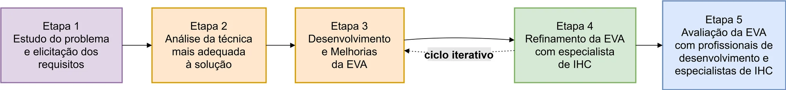

Resumo
A EVA é uma assistente conversacional que recomenda métodos de avaliação de interfaces de acordo com o contexto de cada projeto. Ela foi desenvolvida dentro do EmoFrame, framework que proponho no meu doutorado. Na avaliação, as pessoas acharam a ferramenta fácil de usar e consideraram as recomendações úteis. Também apareceu um ponto crítico para produtos com IA: as pessoas usam a recomendação, mas confiam mais quando entendem por que ela foi feita.
O problema
Existem muitos métodos de avaliação em IHC, e escolher o mais adequado não é simples. Pesam o custo, o momento do projeto, o perfil das pessoas usuárias e o tempo disponível. Quem tem pouca experiência ou poucos recursos costuma travar em perguntas como:
- Qual método devo usar?
- Em que momento devo aplicar?
- Qual cabe no meu orçamento?
- Como entendo um método rapidamente?
Ter muitas opções nem sempre ajuda e pode levar a escolhas piores ou à desistência. A questão era se um assistente de IA conseguiria orientar essa escolha sem tirar o julgamento de quem avalia.
Pergunta de pesquisa
Uma assistente baseada em IA consegue recomendar métodos de avaliação adequados ao contexto, de um jeito útil e fácil de usar, para profissionais com diferentes níveis de experiência?
Processo

O projeto seguiu um ciclo iterativo de construir, avaliar e ajustar, em cinco etapas:
- Entendimento do problema (conduzido por mim): levantamento de requisitos em reuniões com especialistas em IHC, para entender as necessidades na escolha de métodos e o tipo de conversa que a ferramenta precisaria sustentar.
- Escolha da abordagem: uma interface conversacional com LLM, para que a interação acontecesse em linguagem natural.
- Primeira versão funcional.
- Ciclos de avaliação com especialistas: feedback sobre a usabilidade e sobre a qualidade das recomendações, com ajustes até a versão estabilizar.
- Avaliação final com profissionais de desenvolvimento e especialistas em IHC.
Uma decisão guiada pelo feedback
Na etapa 4, os especialistas apontaram um limite importante: a primeira versão não conseguia formular recomendações que combinassem técnicas diferentes, algo comum na prática real. Esse feedback levou a equipe a reformular a forma como a assistente busca e organiza o conhecimento. Ela passou a usar um grafo de conhecimento sobre os métodos e a raciocinar em etapas antes de responder.
Esse é o ponto que eu destacaria: a pesquisa com especialistas mudou a arquitetura do produto, não apenas a interface.
Avaliação final

Participantes: 8 pessoas que fazem prototipação ou avaliação de interfaces, metade da academia e metade da indústria. A maioria avalia de forma esporádica (mensalmente ou ocasionalmente), e duas avaliam com frequência (semanal ou diariamente).
Procedimento: sessões individuais com tarefas de recomendação, seguidas de um questionário em três seções (perfil, qualidade das recomendações e usabilidade) e uma entrevista.
Cuidados:
- Projeto aprovado pelo Comitê de Ética, com consentimento livre e esclarecido.
- Nenhum participante teve contato prévio com a ferramenta, para preservar a primeira impressão.
- Registro de todas as conversas para analisar falhas: 10 conversas e 54 interações.
Principais achados
Analisei os dados do questionário e das sessões, cruzando as respostas sobre a qualidade das recomendações, a usabilidade e a confiança.
1. As recomendações foram consideradas úteis.
Os 8 participantes consideraram as sugestões equivalentes ou superiores às práticas que já usavam: 4 acharam equivalentes, 3 muito melhores e 1 melhor.
2. A interação foi simples.
Todos concordaram que a EVA é fácil de usar (7 deram nota máxima) e que o tempo de resposta é adequado. Poucos precisaram reformular as perguntas.
3. A confiança foi o ponto mais frágil.
"Senti-me confiante" foi o único item com nota mínima, além de duas respostas neutras. Um participante sugeriu que a assistente mostrasse como chegou à recomendação.
4. Houve falhas, mas foram raras.
Houve 1 resposta fora de contexto em 54 interações. Também apareceram dificuldades para mudar de assunto no meio de uma conversa.
O que mudou a partir disso
| Achado | Decisão de design |
|---|---|
| Pouca confiança na recomendação | Incluir explicações na interface, mostrando os critérios usados e o caminho de raciocínio |
| Dificuldade para mudar o contexto da conversa | Refinar o gerenciamento de contexto do diálogo |
| Amostra com alto letramento digital | Testar com públicos menos familiarizados com chatbots |
Limitações
- Amostra pequena e por conveniência. O plano era ter 10 participantes, mas o recrutamento chegou a 8.
- Por terem alto letramento digital, os participantes podem ter avaliado a facilidade de uso de forma otimista.
- Os resultados são evidências iniciais de utilidade e usabilidade, não uma validação definitiva.
O que eu aprendi
Em produtos com IA, ser fácil de usar não basta para gerar confiança. Uma interface simples pode esconder justamente a informação de que a pessoa precisa para decidir se aceita a recomendação. Avaliar a confiança separadamente da usabilidade foi o que revelou essa diferença.